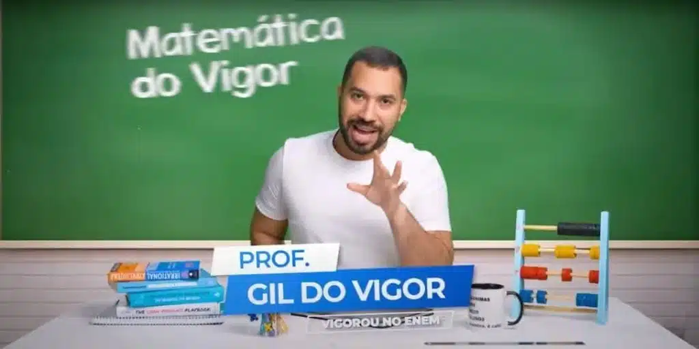

EX-BBB Gil do Vigor surpreende e lança série de aulas gratuitas
Gil do Vigor surpreende ao lançar aulas gratuitas de matemática para o Enem 2024. O projeto, disponível no YouTube, oferece conteúdo acessível e exercícios práticos, focando em tópicos frequentes do exame. Uma grande oportunidade para estudantes se prepararem com qualidade.
Autor: Matheus Couto
Em pleno 2024, ele decidiu compartilhar seu vasto conhecimento em ciências exatas, focando principalmente nos estudantes que se preparam para o Exame Nacional do Ensino Médio (Enem).
Aulas gratuitas e acessíveis para todos
De acordo com o próprio Gil do Vigor, a iniciativa, intitulada “Matemática do Vigor“, faz parte de sua segunda edição e visa democratizar o acesso ao conhecimento.As aulas são disponibilizadas gratuitamente no YouTube, com novos episódios sendo lançados todas as terças e quintas-feiras, sempre às 11h. Acesse o canal no icone abaixo.